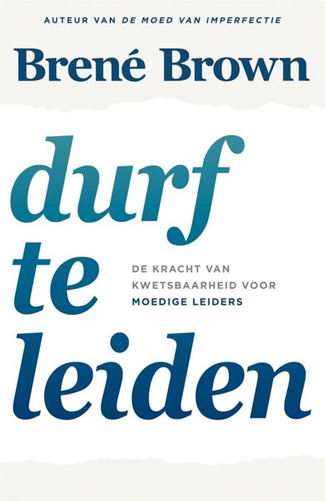

Waarom een Ondernemende technoloog?
Ik heb gekozen voor een ondernemende technoloog omdat ik ervaring op wou doen in het gebied van leiden van een team ook wou ik meer weten over het praten en afspraken maken met de opdrachtgever. Hier mee wou ik beter worden in het begrijpen van de klant zijn wensen en waar ik op moet letten zowel tijdens het uitwerken van de opdracht als in de documenten die bijgehouden en gemaakt moesten worden.
Wat heb ik bereikt?
Door deze richting te volgen ben ik er achter gekomen wat er nou precies bij komt kijken. Aan het begin dacht ik dat een ondernemende technoloog alleen de taak had om met de klant te communiceren en de verdeling van de taken in het team, nu begrijp ik dat er veel meer bij komt kijken zoals het opstellen van contracten om samenwerking te verzekeren, of het maken van markt analyses om beter te begrijp wat de klant van ons vraagt, wie de opdrachtgever wilt bereiken met het product en onze adviezen als vak specialisten. Ook is de communicatie met de klant veel belangrijker dan ik eerst dacht. Ook ben ik er achter komen door feedback van dat ik goed kan luisteren naar mijn team en dat ze open problemen met mij konden bespreken.
Nachtkastboek
Durf te leiden van Brené Brown
Dit boek gaat over hoe je je zelf kan verbeteren als en leider, hoe je je zelf kan motiveren en wat je in de praktijk kan inbrengen. Brené Brown is een onderzoekster die meer dan 20 jaar lang kwetsbaarheid en schaamte heeft bestudeerd. Uit dat werk zijn verschillende belangrijke inzichten uit gekomen die zij in haar boek beschrijft
Waarom heb ik dit boek gekozen?
Ik heb voor dit boek gekozen omdat ik mijn leidinggevende vaardigheid wou verbeteren. ik wou tips en ideeën op doen die ik weer kon gebruiken in het project. Tijdens het lezen van het boek ben ik er achter gekomen dat het vooral gaat over zelf vertrouwen en moet opbouwen. Hier heb ik persoonlijk geen problemen mee en dus heb ik niet veel gehad aan het lezen van dit boek. Er was wel een gedeelte over hoe je het beste iemand kan aangeven op zijn gedrag en of werk. Persoonlijk vind ik het moeilijk om iemand hard aan te spreken en dus heeft dit mij geholpen om meer concreet te zeggen wat ik vind van iemand zijn gedrag of werk zonder die persoon te beledigen.
